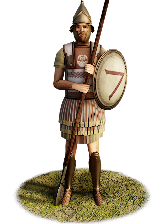

RTR: Imperium Surrectum
RTR: Imperium SurrectumNeodamodeis Phalangites


Class: spearmen · Category: infantry · Men per unit: 60
Reforms: Unlocked by The Kleomenean Reforms
Description
Made up of a plethora of new citizens, the Spartan phalanx is the definite symbol that Kleomenes III has freed Lakedaimon from the shadows of the past. Kleomenes equipped the Neodamodeis pikemen with Konos helmets, painted composite linothorakes, double pteryges and greaves. The small pelte shield, measuring 66cm in diameter, is bearing the emblem of the Mora (regiment) of Elos, a raging bull. Though there had been uniform training, the experience of the soldiers greatly varied according to its makeup of former Spartiate Hoplites, mercenary peltasts (Griffith, Hellenistic Mercenaries p. 98), Perioikoi Hoplites, possibly Helots, who had at most fought as light javelinmen, and Hypomeiones, who may not have been a regular part of the army at all. They performed well enough, however, to be retained by Kleomenes' successor, so that we can still find Spartan phalangites in the army of the 'tyrant' Machanidas in 207 BC (Polyb. XI, 15, 6).
Stats
| Rank in roster | Rank in roster | Rank in roster | Rank in roster | ||||||||
|---|---|---|---|---|---|---|---|---|---|---|---|
| Men per unit | 60 | █████████· 88% | Attack | 19 | ██████████ 97% | Charge bonus | 1 | █········· 4% | Defence | 23 | ███······· 26% |
| · armour | 7 | ████······ 42% | · defence skill | 13 | █········· 14% | · shield | 3 | ████······ 38% | Morale | 11 | ████······ 40% |
| Discipline | Normal | Training | Highly trained | Recruitment cost | 1,955 dn | █████····· 48% | Upkeep per turn | 716 dn | ███████··· 68% | ||
| Turns to recruit | 3 |
Weapons
| Primary | Secondary | Primary | Secondary | Primary | Secondary | Primary | Secondary | ||||
|---|---|---|---|---|---|---|---|---|---|---|---|
| Attack | 19 | 4 | Charge bonus | 1 | 1 | Type | melee · blade | melee · simple | Damage | piercing | piercing |
| Properties | Long spear (bonus against cavalry, penalty against infantry) · +8 attack against cavalry · very long pike (phalanx) | — |
Defence
| Primary | Secondary | Primary | Secondary | Primary | Secondary | Primary | Secondary | ||||
|---|---|---|---|---|---|---|---|---|---|---|---|
| Total | 23 | — | Armour | 7 | — | Defence skill | 13 | — | Shield | 3 | — |
Condition and terrain
| Hit points | 1 | Ground: scrub / sand / forest / snow | -4 / -1 / -6 / -1 | Charge distance | 0 | Formations | Square · Phalanx |
Technical stats
| Time between blows (primary / secondary) | 2.5 s / 2.5 s | Extra fatigue in hot climates | 0 | Collision mass per man (1.0 is normal) | 0.99 | Spacing between men: close / loose | 1 × 1 m / 2 × 2.4 m |
| Default ranks | 5 |
In battle: Can sap · Good stamina
Who can recruit it
A core roster unit for one faction, which can raise it anywhere it holds the right building:
Exactly what a settlement must have, route by route (3)
| Building | Also requires | Building | Also requires | Building | Also requires | ||
|---|---|---|---|---|---|---|---|
| Indirect Rule | Tier 2 Military Industrial Complex · The Kleomenean Reforms · Tier 1 Colony | Direct Rule | Tier 2 Military Industrial Complex · The Kleomenean Reforms · Tier 1 Colony | Homeland | Tier 2 Military Industrial Complex · The Kleomenean Reforms |